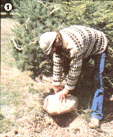
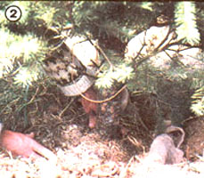
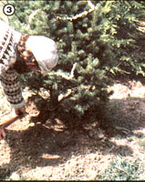
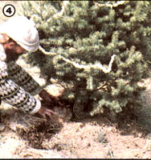
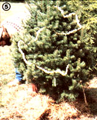

This holiday season, you can establish a living tradition that will endure for generations.
In the restful aftermath of the holidays that sets in toward the end of December, a person can walk through just about any neighborhood and see dozens of bedraggled "used" Christmas trees dumped beside the road to await trash collectors. A custom that was originally meant to provide a reminder of the sleeping promise of spring in the dead of winter has now become yet another symbol of our throw-away society.
To replant Your Christmas tree . . .
[1] dig a hole that's about 1-1/2 times larger than the root mass and gently lower the sapling into place. (If your area has early freezes, you may have to dig the hole a few weeks before the holidays, store the dirt indoors, and fill the hole with straw until planting time.)
[2] Remove the nails from the burlap bag and loosen that cloth to give the tree's roots some "breathing room".
[3] Fill the hole with a portion of the dirt that was removed, and . . .
However, you can avoid such waste by purchasing a living tree ... one with its roots intact in a burlap-wrapped ball of earth. Live evergreens not only remain beautiful throughout the festive season (unlike cut trees, which tend to dry out rapidly), but can be replanted once they've served their holiday function. In that way, you'll create a permanent, living reminder of one of the year's most joyful family occasions . . . and improve the value of your property, establish a new windbreak, or provide some welcome summer shade in the process.
use the remaining soil to shape
a small mound around the edge
of the hole. Then dig a 1- to 2"
-wide ditch just inside that dike.
If the transplant is to be successful, though, certain guidelines will have to be followed ... and these "rules" start to come into play as soon as you visit the Christmas tree lot or nursery. Most horticulturists agree that fir, spruce, and pine are all good candidates for post-holiday planting. Actually, almost any variety of tree-as long as its roots are wrapped in burlap-will adapt well to transplantation . . . except hemlocks.
Choose a healthy specimen with long, full branches and a large earth ball that's not frozen . . . and expect to pay $35 to $40 (or more in large cities) for a four- or five-foot tree. Once you've brought home your handsome selection, you'll need to "break it in" by leaving it in a cool, slightly damp area (such as a garage or basement) for three or four days to lessen the shock of the transition from outdoors to in. During this interim period, keep the root ball covered with straw, peat moss, or an old blanket.
When you carry the tree indoors, stand it in a large washtub (or similar container) and pack sawdust, peat moss, or even shredded newspapers around the trunk to help hold it upright. An old cloth draped over the earth ball will help the roots retain moisture. (To hide the tub and its contents, simply drape a decorative tree skirt over and around it.)
Mulch the tree with straw,
and give it its first watering
by filling the "moat" three times.
Most gardening authorities advise that you keep your living evergreen in the house for only a week to ten days . . . certainly no more than two weeks. Try to place it near a window and away from the warm, dry air escaping from heat vents, fireplaces, and woodstoves. Most of the plant's roots will be close to the top of the earth ball, so be sure to keep that area moist at all times: An average-sized tree will require about one quart of water a day while it's indoors. You can trim a live evergreen with any sort of decorations you'd like . . . but you might want to use electric lights sparingly, since the heat generated by even tiny bulbs will tend to dry out a conifer's needles.
Finally, when you want to move the greenery out of the living room after Christmas, it's a good idea to give it another transitional stay in the garage before transplanting. Once the evergreen is ready to brave the outdoors again, be sure your chosen planting site is far enough from buildings and other trees to allow for future growth. Then follow the simple directions detailed in the accompanying photos.
If your Christmas tree is carefully planted and cared for, you can expect it to begin an annual tradition that will continue to beautify your land in the years to come and serve as a happy reminder of past holiday celebrations.
EDITOR'S NOTE: More Christmas tree ideas (including tips on both decorating and creating them!) can be found in this issue. Turn to the articles beginning on pages 120 and 170. . . and begin preparing for the festivities!
|
 |
 |
 |
|
 |
 |
|